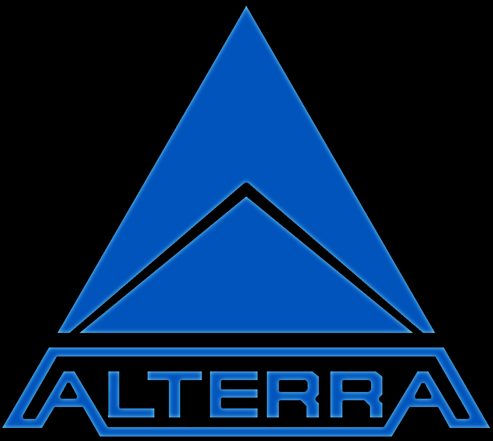

Profundidade
Pontos de Interesse
Castelo de Lava
Usina Térmica Alienígena
. 900 - 1300 meters
. 285 - 675 meters
Afloramento de Xisto
. 550 - 1000 meters
. Centro de pesquisa de doenças
Fóssil gigantesco
Laboratório Rio Perdido
Cache do Arco da Floresta Fantasma